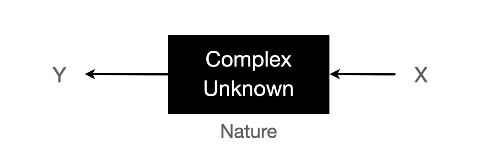
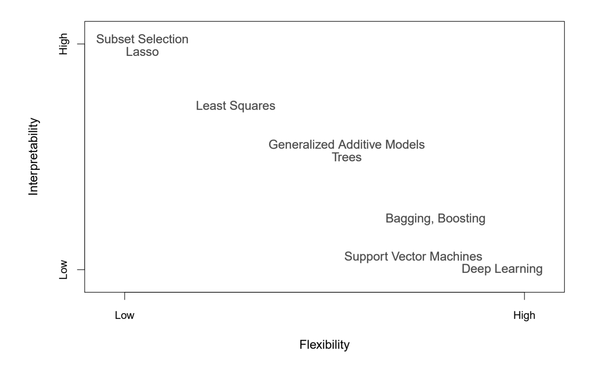
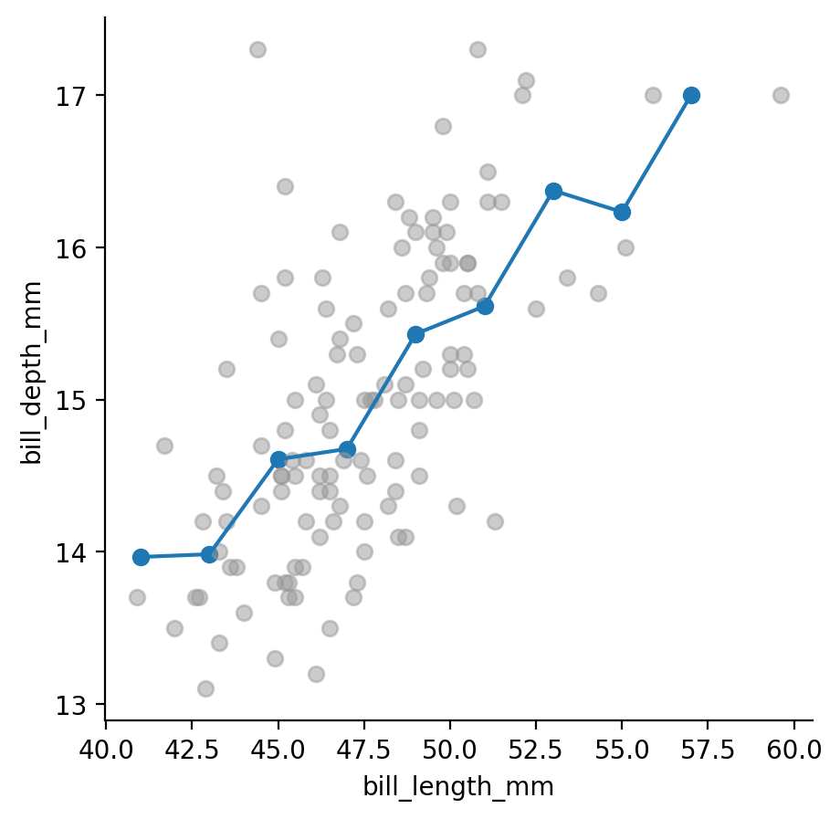
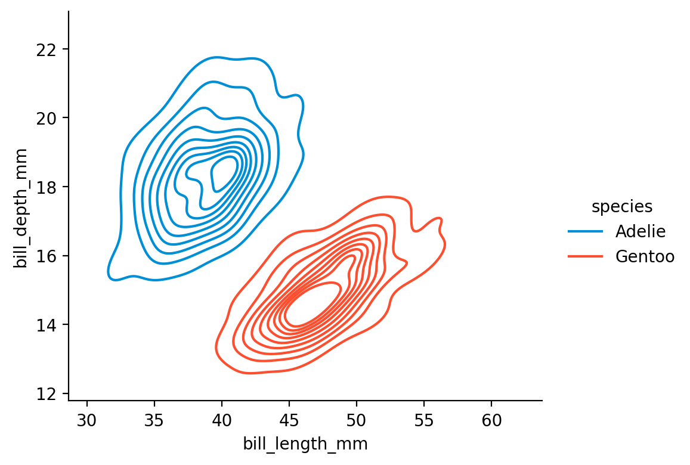
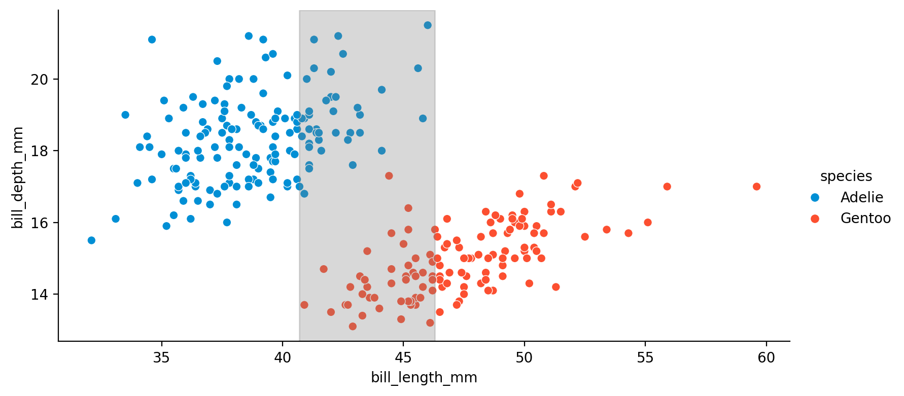
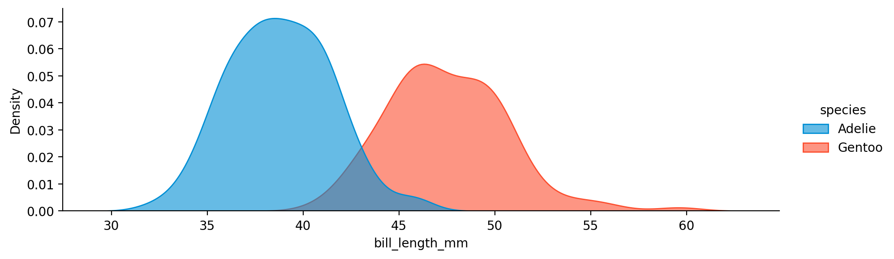
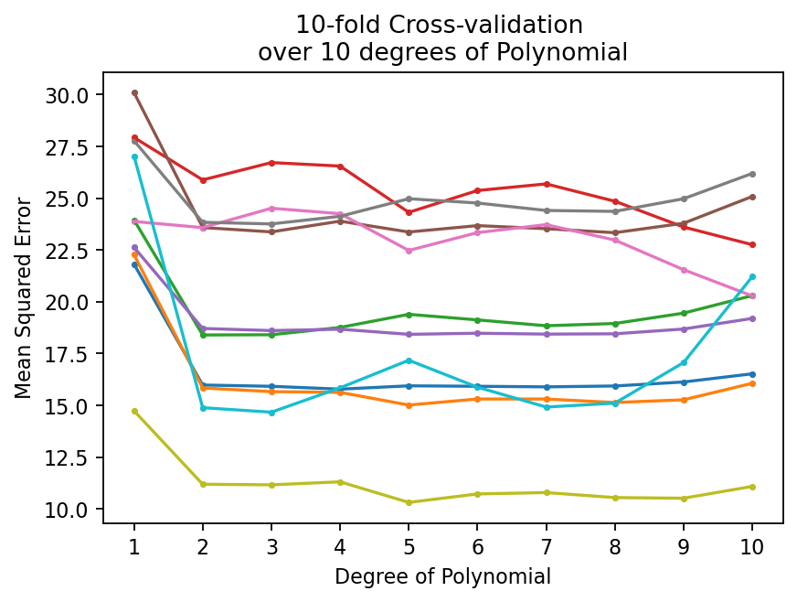
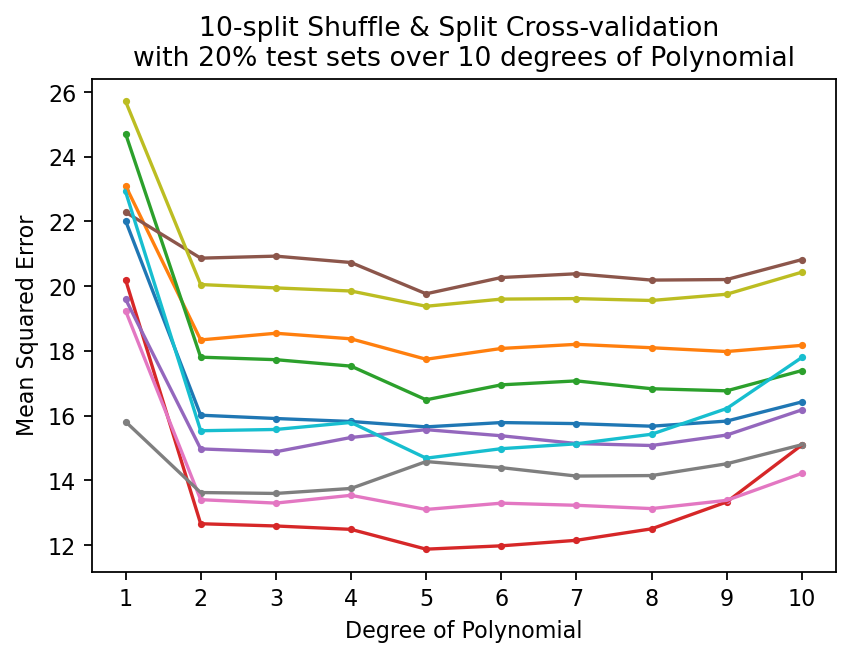
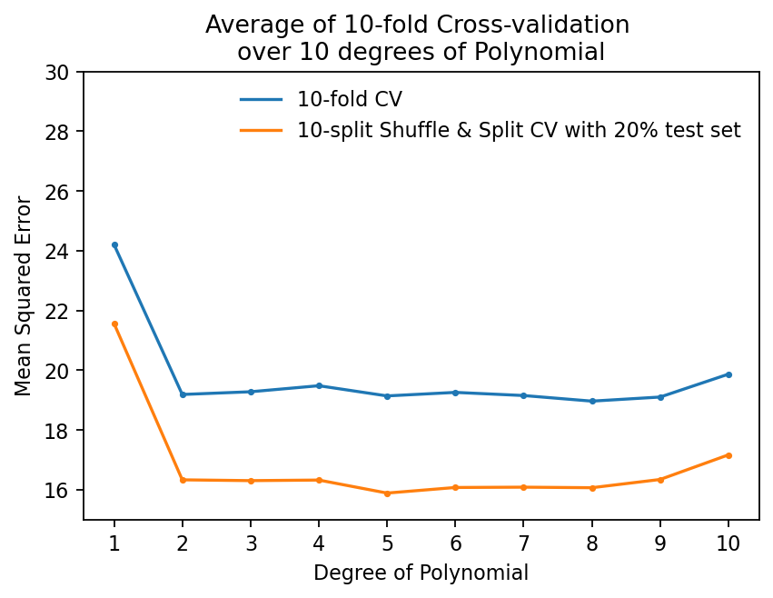

{kind=link}
{kind=link}
{kind=link}
{kind=link}
{kind=link}
{kind=link}
{kind=link}
{kind=link}
{kind=link}
{kind=link}
{kind=link}
{kind=link}
{kind=link}
Truth Adelie Gentoo
Predicted
Adelie 144 7
Gentoo 7 116Machine/Statistical Learning
Mixed

\(f\): \(X_1, X_2, ..., X_p\)가 \(Y\)에 관해 제공하는 systematic information; unknown function
\(Y = f(X_1, X_2, ..., X_p) + \epsilon\), \(Y \perp\!\!\!\perp \epsilon\)
\(\epsilon\): 불확실성의 소스들; reducible error & irreducible error
(epistemic uncertainty & aleatory uncertainty)
- \(f\)에 대한 estimate, \(\hat f\)을 구하여,
- 관측된 \(X_1, X_2, ..., X_p\)로 \(Y\)를 예측하고자 함. 즉, \(\hat Y = \hat f(X_1, X_2, ..., X_p)\)
- \(Y - \hat Y\): 예측 오차
앞서 선형모형은 \(f\)를 \(X\)의 선형함수인 parametric model로 가정한 후 parameter를 추정하여 문제가 단순하였으나,
이번에는 \(f\)의 형태를 가정하지 않고, \(f\) 자체를 추정하고자 하는 매우 광범위한 문제임.
예를 들어,
- \(X_1, X_2, ..., X_p\): 환자 혈액 샘플의 특성들
- \(Y\): 특정 약물에 대한 환자의 이상 반응 위험을 나타내는 변수
- \(\epsilon\): 약물 제조상의 차이, 해당 날짜에 환자의 전반적인 컨디션 등
Important예측의 의미
“예측”이라는 표현은 맥락에 따라 다르게 쓰일 수 있음
- 모집단에서 혹은 진정한 모델을 \(f\)로 표현하면 우리가 성취하고자 하는 것은 \(f\)에 대한 추정(estimate) \(\hat{f}\)를 얻는 것임; \(f\) 자체는 알 수 없는 것임.
- 통계에서 예측에 대해 말할 때는, 모델 \(f\)를 추정하는데 사용된 표본의 값(\(X\))으로 \(\hat{f}\)이 \(Y\)를 얼마나 잘 예측/설명 하는가를 계산하는데(가령, \(R^2\)), 이 때 \(Y\)도 표본의 관측치를 쓰는데 이는 진정한 의미의 예측 정확도를 측정하는 것이 아님.
- 예측은 일반적으로 미래(혹은 관찰되지 않은) 데이터에 대한 예측을 의미해야 함.
- 머신러닝에서는 모델을 추정하는데 쓴 데이터와 예측을 위한 데이터가 섞이지 않도록 함; 훈련할 때 쓰인 정보가 세어 나가지 않도록 함.
- 전자를 훈련셋의 예측 오류, 후자를 테스트셋의 예측 오류로 나누어 분석
- 통계에서는 모집단이라는 프레임으로 이론적으로 일반화(미래 데이터를 포함)를 성취하고자 하는 접근
진정한 혹은 true \(Y\)라고 표현하는 것은 미래 예측의 실제값은 알 수 없기 때문에 unknown으로 이해함.
가령, 암을 예측하는데, 그 예측이 맞았는지 틀렸는지에 대한 예측 오류는 예측 시점에서 결코 알 수 없음.
통계에서는 엄밀히 말할 때, 표본에 대한 예측 오류를 잔차(residual), 모집단에 대한 예측 오류를 오차(error)라고 표현하기도 함. 종종 섞어쓰는 경향이 있음.
Tip용어 정리
변수들 간의 관계에 있어서, 예측에 사용되는 변수(X)와 예측되는 변수(Y)를 구분하기 위해 여러 용어들이 사용됨.
X: feature, predictor, independent variable
Y: target/label, response, dependent variable, outcome variable, criterion
관측치(데이터의 행): example, instance, observation, record, data point, case
왜 분석하는가?
The Occam’s Dilemma?
- 예측(prediction)
- 변수들 간의 관계에 대한 추론(inference)/해석(interpretation)
- 정보(information) 획득의 관점에서: Leo Breiman 글 참고
어떻게 \(f\)를 추정하는가?
모수적(parametric) 접근
- 모수적 접근: \(f\)의 형태를 가정하고, 그 형태에 대한 parameter를 추정
- 가령, 선형성을 가정한 linear model: \(f(X) = \beta_0 + \beta_1X_1 + \beta_2X_2 + ... + \beta_pX_p\)
- 모델을 관찰된 데이터에 fit(적합) 또는 모델을 train(훈련)/learn(학습) 시켜, parameter(모수) 추정
- 전형적으로 (ordinary) least squares 방법을 사용
- 상대적으로 적은 수의 데이터로도 추정이 가능
- 해석을 통해 변수 간의 관계 추론 용이
- \(f\)의 형태를 잘못 가정하면, 잘못된 결과를 낼 수 있음

Source: p.21, An Introduction to Statistical Learning with Applications in Python
비모수적(non-parametric) 접근
- \(f\)의 형태를 가정하지 않음
- 보통, 예측의 정확성이 높도록, 즉 데이터와 최대한 가까운 매우 복잡한 형태의 \(\hat f\)를 추구
- 과적합(overfit)이 되지 않도록, 새로운 데이터에도 잘 일반화되도록 sweet spot을 찾아야 함
- 매우 많은 데이터가 요구됨
- 해석은 어려우나, \(f\)로부터 다양한 정보(information)을 추출하는 방법을 고안함으로써 (해석을 넘어) 정보를 추출할 수 있음
- 모수가 없을 수도, 있을 수도 있으나, 해석 가능한 모수라고 보기 어려움
Source: p.22, An Introduction to Statistical Learning with Applications in Python
The tradeoff between flexibility and interpretability

Source: p.22, An Introduction to Statistical Learning with Applications in Python
어떤 기준으로 이 tradeoff의 수준을 결정할 것인가?
- 해석에 중심을 두고, 변수 간의 관계를 추론하고자 하는 경우: 모형이 틀릴 위험이 존재 >> bias가 높아짐
- 예측의 정확성에 중심을 두는 경우: 과적합이 될 위험이 존재 >> variance가 높아짐
- 이 둘이 항상 대치되는 것은 아님; 단순한 모형이 새로운 데이터에서 더 나은 예측 정확도를 가질 수도 있음!
회귀 vs. 분류
Regression vs. Classification
- 보통 \(Y\)가 연속형 변수인 경우, 회귀(regression) 문제로 다루고, \(Y\)가 범주형 변수인 경우, 분류(classification) 문제로 일컬어 짐.
- 회귀모형을 확장하여 확률(연속값)을 구한 후, 이를 이용해 분류문제를 다룰 수 있음; ex. logistic regression
- 예측 변수의 경우는 연속인지 범주형인지는 상관없음.
Decision Theory
Source: Deep Learning: Foundations and Concepts by Bishop, C. M. & Bishop, H
\(Y = f(X) + \epsilon\)
앞서 선형 회귀 모형에서 구한 것은, conditional probability \(p(Y|X)\)를 모델링 한 것이었음.
이 분포를 Gaussian:\(N(\mu, \sigma^2)\)으로 가정하고, 분포의 평균과 표준편차를 likelihood가 최대가 되도록 추정하는 간단한 모델로 축소했음; predictive distribution
- 분포 \(p(Y|X)\)를 통해 예측의 불확실성을 파악할 수 있음
- 만약, 주어진 \(X\)에서 대해 예측값 \(f(X)\)을 하나 결정하는데, 실제 true 값을 \(y\)라고 하면,
- 그 오차에 대해 발생되는 어떤 penalty 또는 cost를 정의; loss function
- Loss function을 통해 “최적”의 예측값에 대한 기준을 제공
- \(f(x) = E(Y|X=x)\)로 예측하는 것이 많은 경우 적절하지만 일반적으로 그런 것은 아님
Loss/Cost Function
Loss function: \(L(y, f(x))\)
\(y\): true value, \(f\): predicted value
- 이 loss를 최소화하는 것이 목표
- True \(y\)를 모르기 때문에, 평균치인 expected loss를 최소화하는 것이 목표
- 즉, \(E(L) = \displaystyle \iint L(y, f(x))p(x, y) dx dy\)를 최소화하도록 예측값(\(f\))을 결정
- 각 \(x\)에 대해 \(\displaystyle \int L(y, f(x))p(y|x)dy\)를 최소화
- 예를 들어, 다이아몬드의 무게로 가격을 예측한다면: 1 carat 다이아몬드의 true price?
- 또는, 목소리(특정 frequency)로 성별을 예측한다면; 분류 문제의 경우 뒤에서 다룸
Source: Language Log
앞서 회귀 모형에서는 기본적으로 squared loss 사용;
- \(L_2 = \displaystyle(f(x) - y)^2\)
- \(E(L)\)을 최소로 하는 함수: \(f(x_0) = E(Y|X=x_0)\): regression function
- \(L_1 = \displaystyle |~f(x) - y~|\)
- \(E(L)\)을 최소로 하는 함수: \(f(x_0) = median(Y|X=x_0)\)
- \(L_q = \displaystyle |~f(x) - y~|^q\)
Source: Pattern Recognition and Machine Learning by Christopher M. Bishop
예를 들어,
- \(f(1.5) = E(Y|X=1.5)\)인 \(f\)가 \(E(L_2)\)를 최소화하는 optimal한 함수임.
- 즉, conditional mean \(f(x) = E(Y |X = x)\)는 \(L_2\) loss의 관점에서 최적의 함수이며, regression function이라고 부름.
실제로는 \(E(Y | X=x)\)를 계산하는 것은 불가능하며, 이를 추정하기 위해 x의 근방에서 평균값을 취함.
- \(\hat f(x) = Ave(Y |X \in N(x))\)
- 단, 관측치의 수에 대해 상대적으로 predictor의 갯수가 늘어남에 따라 점차 효율성이 떨어짐; the curse of dimensionality
- 예를 들어, 다이아몬드 가격을 carat(캐럿), cut(컷), clarity(투명도)의 세 변수로 예측하는 경우,
- \(\hat f(1.5, Fair, I1) = E(Y|carat=1.5,~ cut=Fair,~ clarity=I1)\)
\(f\)의 smoothing에 대한 여러 접근이 있음
- regualization, spline, kernel 등
The Palmer Archipelago penguins 데이터셋의 예로 보면,

Artwork by @allison_horst

만약, 부리의 길이로 부리의 깊이를 예측한는 모형에 대해 \(\hat f\)를 구한다면,

앞서 선형회귀모형을 사용한다면,
- 관계를 선형이라고 전제하고,
- Error가 Gaussian 분포를 따른다고 가정하고,
- Likelihood가 최대가 되도록 파라미터(기울기와 절편)를 구한 것임; maximum likelihood estimation
- Squared error를 최소화하는 것과 동일함.
TipExpected value
\(X: \{a, b, a, a, b, c\}\)
The mean of \(X=\displaystyle \frac{a + b + a + a + b + c}{6} = \frac{3*a}{6} + \frac{2*b}{6} + \frac{1*c}{6}=a*\frac{3}{6} + b*\frac{2}{6} + c*\frac{1}{6}\)
\(~~~~~~~~~~~~~~~~~~~~~~~~~=a*p(X=a) + b*p(X=b) + c*(X=c)\): weighted average
Expectation: \(E(X)=\displaystyle \sum x_i p(X=x_i)= \sum xp(x)\)
연속값이라면, \(E(X)=\displaystyle \sum \Delta x * p(\Delta x) = \int x f(x) dx\), where \(f(x)\) is the probability density function
\(p(\Delta x) = f(x)\Delta x\)
The Bias–Variance Trade-off
위의 논의는 특정 데이터셋에 의존할 수밖에 없는데, (참고: Bayesian의 경우 다른 접근)
데이터셋마다 다른 \(\hat f\)를 얻게 된다는 점을 감안했을 때, \(\hat f\)의 변동성을 살펴보면,
\(L_2\) loss의 경우,
\(\displaystyle h(x) := E(Y|X=x)\): optimal prediction of \(Y\) at any point \(x\)
\(~~~~~~~~~ = \displaystyle \int y \cdot p(y|x)dy\)
\(E(L_2) = \displaystyle \iint \left( f(x) - y \right)^2 p(x, y) dxdy = \iint \left( f(x) - h(x) + h(x) - y \right)^2 p(x, y) dxdy\)
\(~~~~~~~~~~~ = \displaystyle \int \left( f(x) - h(x) \right)^2 p(x) dx + \iint \left( h(x) - y) \right)^2p(x, y) dxdy\)
- 두 번째 항: optimal prediction \(h(x)\)가 true value와 얼마나 떨어져 있는가?(분산) - irreducible error
- 첫 번째 항: \(h(x)\)와의 차이를 최소화하도록 \(f(x)\)를 선택하는데 하는데, 유한한 데이터셋에서는 그 간극이 존재
- 이제, 분포 \(p(x, y)\)로부터 수많은 데이터셋들 \(D_i\)를 얻었다고 가정했을 때,
- 특정 \(x_0\)에 대해서
\(E_D[\left( f(x_0; D_i) - h(x_0)\right)^2] = E_D[\left( f(x_0; D_i) - E_D\left( f(x_0; D_i)\right) + E_D\left( f(x_0; D_i)\right) - h(x_0)\right)^2]\) \(~~~~~~~~~~~~~~~~~~~~~~~~~~~~~~~~~~~~~~~~~~~ =[E_D\left( f(x_0; D_i)\right) - h(x_0)]^2 + E_D[\left\{f(x_0;D_i) - E_D\left(f(x_0;D_i)\right)\right\}^2]\)
\(~~~~~~~~~~~~~~~~~~~~~~~~~~~~~~~~~~~~~~~~~~~ = bias^2 + variance\)
Bias: 최적의 예측값(\(h\))에 비해, (여러 데이터로부터 얻은) “평균적인 예측값”이 얼마나 차이가 나는가?
- 즉, 최적의 예측보다 평균적으로 얼마나 틀린 예측을 하는가?
Variance: 각 데이터셋으로부터 얻은 예측값이 “평균적인 예측값”에서 얼마나 떨어져 있는가?(분산)
- 즉, 데이터셋에 따라 \(f(x_0;D_i)\)가 얼마나 민감하게 변하는지 측정
모든 \(x\)에 대한 비용의 총합으로 확장해서 이해하면,
NoteExpected Loss 분해
\(\displaystyle E(L_2) = (bias)^2 + variance + noise\)
- \(\displaystyle \text{(bias)}^2 = \int [E_D\left( f(x_0; D_i)\right) - h(x_0)]^2 p(x) dx\)
- \(\displaystyle \text{variance} = \int E_D[\left\{f(x_0;D_i) - E_D\left(f(x_0;D_i)\right)\right\}^2] p(x) dx\)
- \(\displaystyle \text{noise} = \iint \left( h(x) - y) \right)^2p(x, y) dxdy\)
Bias와 variance간에는 trade-off가 존재함
- Flexible한 모델의 경우 데이터에 더 잘 적합하여, variance가 높아짐. 즉 데이터셋마다 너무 다른 예측을 하게 됨
- 데이터에 overfitting이 된다고 말할 수 있음.
- 단, N이 증가하면(데이터셋 사이즈가 커지면), flexible한 모델의 variance가 줄어듦.
- 여러 데이터셋으로부터 평균을 얻으면, 실제값에 가까워짐.
- Rigid한 모델의 경우 데이터셋에 덜 적합하여, bias가 높아짐. 즉, 평균적으로 더 틀린 예측을 하게 됨
- 한편, 데이터셋에 덜 민감하여 variance가 줄어듦
- 작은 데이터셋에서 더 유리
- 이 둘의 적절한 균형을 갖는 모델이 최적의 예측 모델임
예를 들어, 함수 \(h(x) = sin(2\pi x)\)로부터 생성된 데이터셋(N=10)에 대해 다항식의 차수에 따른 flexibility의 변화에 따른 OLS 모델들을 비교하면,
데이터셋의 사이즈가 커지면, (M=9인 경우)
함수 \(h(x) = sin(2\pi x)\)로부터 생성된 100개의 데이터셋(각 N = 25)에 대해 3가지 flexibility에 대한 모델들을 비교하면,
Source: p.10, 12, 127, Deep Learning: Foundations and Concepts by Bishop, C. M. & Bishop, H
Classification
\(Y\)가 범주형 변수인 경우, 즉 분류(classification) 문제인 경우
- Y가 k개의 범주/클래스로 나뉘는 경우: \(Y \in \{C_1, C_2, ..., C_k\}\)
- 두 범주의 경우, 간단히 \(Y \in \{0, 1\}\)
- \(f(x_i): P(Y = C_k|X=x_i)\)가 최대인 클래스에 할당; 즉, \(f(x_i) = \underset{k}{\mathrm{argmax}}~ P(Y = C_k|X=x_i)\)
- Conditional class probabilities; 앞서 conditional mean \(E(Y|X)\)에 대응
- Bayes classifier: 최대치 (0-1 loss function 가정하에)
- 이 \(P(Y = C_k|X=x)\)를 추정하기 위한 다양한 방식들이 존재
- K-nearest neighbors
- Logistic regression
- Generalized additive models
- Linear/Quadratic discriminant analysis

한 개의 예측변수로 예측한다면,
가령 \(X\): bill_length_mm인 경우, 즉 펭귄의 부리 길이로만 두 종을 분류한다면,


Quadratic discriminant analysis(QDA): 각각을 Gaussian으로 가정하고, 평균과 표준편차를 추정
Confusion matrix with the threshold=0.5
만약, 다음과 같은 loss function (loss matrix)가 주어진다면,
Truth Adelie Gentoo
Predicted
Adelie 0 10
Gentoo 30 0Expected loss:
\(E(L) = \displaystyle \sum_{i=1} \sum_{j=1} L_{ij}P(y\in C_i, \hat y\in C_j) = \frac{1}{274}(144*0 + 7*10 + 7*30 + 116*0)\)
보통의 경우, 0-1 loss를 사용. 즉, misclassified된 관측치에 대한 비율; misclassification error rate
\(E(L) = \displaystyle \frac{1}{N} \sum_{i=1}^N I(y_i \neq \hat y_i)\) where \(I\) is the indicator function: 0 if \(y_i = \hat y_i\), 1 otherwise
잘못된 예측에 대한 비용이 다르다면, 이에 대응하는 expected loss를 기준으로 모델을 평가
- 만약, 와인 셀러가 와인의 품질(high:양성 vs. low:음성)을 성분들로 예측하는 모형을 만든다면,
- 높은 품질의 와인을 낮은 품질로 예측하면, 수익의 악화
- 거짓 음성을 낮춰야 하는 경우: 예를 들어, 영세한 와이너리가 수익이 중요한 경우
- 낮은 품질의 와인을 높은 품질로 예측하면, 와인 품평가에게 신뢰를 잃을 수 있음
- 거짓 양성을 낮춰야 하는 경우: 예를 들어, 고품질의 와인을 생산하는 것으로 유명한 와이너리가 네임밸류를 유지하기 위해. 반면, 고품질의 와인이 싸게 팔리는 것은 감당할 수 있음.
Model evaluation
모델의 평가는 예측함수의 오차로 인한 손실(loss)이 최소인 것으로 기준을 둘 수 있으나,
현실적으로는 모델은 특정 데이터셋, 혹은 특정 관찰값에 의존할 수밖에 없음.
우리가 원하는 것은 관찰값에 대해서가 아닌 일반화된(generalized) 혹은 전체(population)에 대해 손실이 최소이기를 바라는 것임.
전통적 통계에서는 모집단(population)이라는 것을 상정하여, 일반화된 모형을 추론하고자 했음.
- 이를 위해 모집단에 대한 여러 가정들이 필요했으며, 이를 통해 모집단에 대한 추론(inference)을 얻었음.
- 관측치를 최대한 모두 사용하여 모형을 추정하고, 모집단에 대한 추론에 대해 수학적인 수정을 거침.
- Likelihood의 관점에서 최선의 모형을 선택하고, 모집단에 대한 가정을 기반으로 불확성을 추론함.
Resampling methods
현대적인 관점에서는 가정없이 관찰된 데이터셋만으로 일반화할 수 있는 다른 접근 방식을 택함.
1) 교차검증 (cross-validation), 2) 부트스트랩 (bootstrap)
1) 교차검증 (cross-validation)
- 데이터셋을 훈련셋(training set)과 테스트셋(test set)으로 나누어, 훈련셋으로 모델을 구축하고
- 모델이 훈련/학습 과정에서 보지 못한 새로운 데이터셋인 테스트셋에서 얼마나 잘 작동하는지를 평가함.
- 이는 모델이 얼마나 일반화(generalization)될 수 있는가를 평가하는 접근이라고 볼 수 있음.
- 모델의 과적합을 조정하기 위해(bias-variance trade-off) 훈련셋을 다시 여러 개의 서브셋으로 나누어 교차검증(cross-validation)을 수행; 검증셋(validation set)
- 실질적으로 테스트셋과 검증셋은 동일한 개념으로 어떻게 1) 훈련셋, 2) 검증셋, 3) 테스트셋으로 나누어 데이터를 이용할 것인지는 여러 상황을 고려해서 유연하게 적용하게 됨.
{kind=link}
Warning테스트셋의 의미
엄밀히는 테스트셋은 훈련셋과 매우 “동질적인 데이터”이기 때문에 (무작위 추출로 나눈 두 세트임) 진정한 미래의 데이터라고 보기 어려움
이 테스트셋을 미래의 새로운 데이터라고 간주하려면 적어도,
- 미래에도 현재의 데이터와 동질적인 데이터가 발생할 것이라는 가정이 필요.
- 미래에도 현재와 동일한 인과 메커니즘이 작동해야 함.
가령, 도시 공유자전거의 수요를 예측하는데, 올해의 데이터로 내년의 수요를 예측할 때
- 내년에도 사람들은 “동일한 이유”로 자전거를 이용할 것이어야 하며; 예를 들어, 날씨가 좋으면 더 타러 나올 것임.
- 내년에도 자전거를 빌리는 방식이 동일해야 하며; 예를 들어, 대여비나 대여 방식, 대여 장소 등의 변경이 없어야 함.
- 내년에도 자전거를 빌리는 사람들은 올해와 다른 종류의 사람들은 아니어야 함; 예를 들어, 대규모 인구 변화가 없어야 함.
2) 부트스트랩 (bootstrap)
- 데이터셋에 따라 모델이 어떻게/얼마나 바뀌는지를 추정하기 위해, 데이터셋으로부터 여러 개의 (가상) 샘플을 추출
- 주어진 데이터셋으로부터 같은 사이즈의 데이터셋들을 “중복을 허용”해서 추출. 가령, 1000개의 표본을 얻을 수 있음
- 평균적으로 각 표본에서 63.2%의 중복되지 않는 데이터가 선택됨
- 이는 마치 새로운 표본들을 얻는 것과 같은 효과를 얻어, 표본들마다 모형이 어떻게 다르게 추정되는지를 파악할 수 있음.
- 전통적 통계에서 “표본 분포”를 이론적으로 얻어 파라미터 추정치의 불확실성을 얻었는데, 이에 대한 현대적 대안이기도 함.
- 머신러닝에서는 여러 (가상) 표본에서 학습시킨 모형들을 평균내어 예측력을 높히는데 사용; Bagging (Bootstrap aggregating)
{kind=link}
Tip훈련셋과 테스트셋에 대한 손실
모형에 대한 평가는 테스트셋에 대한 손실을 기준으로 해야 함으로, 두 종류의 손실에 대해 구별함.
훈련셋에 대한 손실(오차): 모형을 세우는데 사용된 데이터셋에 대한 손실
테스트/검증셋에 대한 손실(오차): 테스트/검증 데이터셋으로 모형을 평가 했을 때의 손실
모형은 훈련셋에 최대한 적합되도록 세운 것이기 때문에,
훈련셋의 손실(오차) < 테스트/검증셋의 손실(오차)
(단, 모형을 세우는 때 사용된 손실과 동일한 방식의 손실로 평가했을 때)
교차검증
Cross-Validation
데이터셋을 훈련셋과 검증셋으로 나누어 보면; validation set approach
예를 들어, Automobile Data(auto) (ISLP 패키지)에서 연비(mpg)를 마력(horsepower)로 예측하는 모델을 만든다면,
- 훈련셋과 검증셋을 어떻게 선택하는지에 따라 결과가 바뀜
- 훈련셋의 양을 얼마나 선택하는지에 따라 결과가 바뀜: 데이터가 작을 수록 모형의 적절성이 낮아짐
- 아래 그림; 어떻게 데이터셋을 나누느냐에 따라 결과가 달라짐
이를 해결하기 위해 교차검증(cross-validation)을 사용
- 다수의 훈련셋과 검증셋을 생성하여, 평균값으로 모형의 성능을 평가
- 다양한 변형이 존재
load packages
# numerical calculation & data frames
import numpy as np
import pandas as pd
# visualization
import matplotlib.pyplot as plt
import seaborn as sns
import seaborn.objects as so
# statistics
import statsmodels.api as sm
# pandas options
pd.set_option('mode.copy_on_write', True) # pandas 2.0
pd.options.display.float_format = '{:.2f}'.format # pd.reset_option('display.float_format')
pd.options.display.max_rows = 7 # max number of rows to display
# NumPy options
np.set_printoptions(precision = 2, suppress=True) # suppress scientific notation
# For high resolution display
import matplotlib_inline
matplotlib_inline.backend_inline.set_matplotlib_formats("retina")code
# install ISLP package
# pip install ISLP
from ISLP import load_data
auto = load_data("Auto")
auto.head(3) mpg cylinders displacement horsepower weight acceleration year \
0 18.00 8 307.00 130 3504 12.00 70
1 15.00 8 350.00 165 3693 11.50 70
2 18.00 8 318.00 150 3436 11.00 70
origin name
0 1 chevrolet chevelle malibu
1 1 buick skylark 320
2 1 plymouth satellite from sklearn.model_selection import train_test_split
auto_train, auto_valid = train_test_split(auto, test_size=.5, random_state=0)code
p = (
so.Plot(auto_train, x='horsepower', y='mpg')
.add(so.Dots(color=".5"))
)
p.show()
for i in range(1, 6):
p.add(so.Line(), so.PolyFit(i)).label(title=f"M = {i}").show()
{kind=link}
Left: Validation error estimates for a single split into training and validation data sets. Right: The validation method was repeated ten times, each time using a different random split of the observations into a training set and a validation set. This illustrates the variability in the estimated test MSE that results from this approach.
Source: p. 204, An Introduction to Statistical Learning with Applications in Python
교차검증의 예
- K-fold cross-validation: 데이터셋을 k개의 서브셋으로 나누어, k번의 모형평가를 수행
- Leave-one-out cross-validation(LOOCV): k=n인 경우
- 거의 모든 데이터로부터 훈련
- k-fold 작업에서 발생하는 무작위성이 없음
- Shuffle-split cross-validation: 데이터셋을 무작위로 섞어서 k번의 모형평가를 수행
Scikit-learn: cross-validation 문서 참고
{kind=link}
{kind=link}
{kind=link}
- 주로 k=5, k=10을 사용; 경험적으로 최적임
- k가 커지면, 학습에 더 많은 데이터를 사용하므로 모델이 더 일반화된 학습을 할 수 있으나
- 각 fold에서의 검증 세트가 작아지므로 fold별 성능 평가의 변동성이 커질 수 있음
k개의 훈련셋에서 각각에서 얻은 모델에 대해서 검증셋으로부터 모형의 평가치를 얻음: 주로 MSE(mean squared error)
k-fold CV estimate: \(\displaystyle CV_{(k)} = \frac{1}{k} \sum_{i=1}^k MSE_i\)
분류의 경우, misclassification error rate: \(\displaystyle CV_{(k)} = \frac{1}{k} \sum_{i=1}^k \frac{1}{n_i} \sum_{j=1}^{n_i} I(y_j \neq \hat y_j)\)
code
from sklearn.model_selection import cross_validate, cross_val_score, KFold, ShuffleSplit
from sklearn.linear_model import LinearRegression
from sklearn.pipeline import make_pipeline
from sklearn.preprocessing import PolynomialFeatures
from ISLP import load_data
auto = load_data("Auto")
X = auto[["horsepower"]]
y = auto["mpg"]
cv = KFold(n_splits=10, shuffle=True, random_state=0)
mod_auto = make_pipeline(PolynomialFeatures(2), LinearRegression()) # 2차 다항함수
mod_auto_cv = -cross_val_score(mod_auto, X, y, cv=cv, scoring='neg_mean_squared_error') # default scoring is R2
print(f"For the quadratic polynomial:\n10-fold Cross-validation \nMSEs: {mod_auto_cv}, \nAverage: {mod_auto_cv.mean()}")For the quadratic polynomial:
10-fold Cross-validation
MSEs: [15.98 15.84 18.39 25.88 18.71 23.58 23.58 23.83 11.19 14.88],
Average: 19.185331419374968code
cv = ShuffleSplit(n_splits=10, test_size=.2, random_state=0)
mod_auto = make_pipeline(PolynomialFeatures(2), LinearRegression()) # 2차 다항함수
mod_auto_cv = -cross_val_score(mod_auto, X, y, cv=cv, scoring='neg_mean_squared_error') # default scoring is R2
print(f"For the quadratic polynomial:\nShuffle & Spllit Cross-validation with 20% test sets \nMSEs: {mod_auto_cv}, \nAverage: {mod_auto_cv.mean()}")For the quadratic polynomial:
Shuffle & Spllit Cross-validation with 20% test sets
MSEs: [16.01 18.34 17.81 12.66 14.97 20.87 13.4 13.62 20.05 15.53],
Average: 16.32656735042881code
ev_error1 = np.zeros([10, 10])
X = auto[["horsepower"]]
y = auto["mpg"]
cv = KFold(n_splits=10, shuffle=True, random_state=0)
for i, d in enumerate(range(1, 11)):
mod_auto = make_pipeline(PolynomialFeatures(d), LinearRegression())
mod_auto_cv = cross_val_score(mod_auto, X, y, cv=cv, scoring='neg_mean_squared_error') # cross_validate에 대한 wrapper
ev_error1[i, :] = -mod_auto_cv
# plot
plt.figure(figsize=(6, 4), dpi=80)
for i in range(10):
plt.plot(np.arange(1, 11), ev_error1[:, i])
plt.scatter(np.arange(1, 11), ev_error1[:, i], s=5)
plt.xticks(np.arange(1, 11))
plt.xlabel("Degree of Polynomial")
plt.ylabel("Mean Squared Error")
plt.title("10-fold Cross-validation \nover 10 degrees of Polynomial")
plt.show()
# Shuffle & Split Cross-validation
ev_error2 = np.zeros([10, 10])
cv = ShuffleSplit(n_splits=10, test_size=.2, random_state=0)
for i, d in enumerate(range(1, 11)):
mod_auto = make_pipeline(PolynomialFeatures(d), LinearRegression())
mod_auto_cv = cross_val_score(mod_auto, X, y, cv=cv, scoring='neg_mean_squared_error')
ev_error2[i, :] = -mod_auto_cv
# plot
plt.figure(figsize=(6, 4), dpi=80)
for i in range(10):
plt.plot(np.arange(1, 11), ev_error2[:, i])
plt.scatter(np.arange(1, 11), ev_error2[:, i], s=5)
plt.xticks(np.arange(1, 11))
plt.xlabel("Degree of Polynomial")
plt.ylabel("Mean Squared Error")
plt.title("10-split Shuffle & Split Cross-validation \nwith 20% test sets over 10 degrees of Polynomial")
plt.show()

code
ev_error3 = np.zeros([10, 2])
X = auto[["horsepower"]]
y = auto["mpg"]
cv = KFold(n_splits=10, shuffle=True, random_state=0)
for i in range(10):
mod_auto = make_pipeline(PolynomialFeatures(i+1), LinearRegression())
mod_auto_cv = cross_val_score(mod_auto, X, y, cv=cv, scoring='neg_mean_squared_error') # cross_validate에 대한 wrapper
ev_error3[i, 0] = -mod_auto_cv.mean()
cv = ShuffleSplit(n_splits=10, test_size=.2, random_state=0)
for i in range(10):
mod_auto = make_pipeline(PolynomialFeatures(i+1), LinearRegression())
mod_auto_cv = cross_val_score(mod_auto, X, y, cv=cv, scoring='neg_mean_squared_error') # cross_validate에 대한 wrapper
ev_error3[i, 1] = -mod_auto_cv.mean()
# plot
plt.figure(figsize=(6, 4), dpi=80)
labels = ["10-fold CV", "10-split Shuffle & Split CV with 20% test set"]
for i in range(2):
plt.scatter(np.arange(1, 11), ev_error3[:, i], s=5)
plt.plot(np.arange(1, 11), ev_error3[:, i], label=labels[i])
plt.xticks(np.arange(1, 11))
plt.xlabel("Degree of Polynomial")
plt.ylabel("Mean Squared Error")
plt.title("Average of 10-fold Cross-validation \nover 10 degrees of Polynomial")
plt.ylim(15, 30)
plt.legend(frameon=False)
plt.show()
Scikit-learn: metrics and scoring
Bias-Variance Trade-off를 고려하여 test error가 최소가 되는 모델을 선택
{kind=link}
Source: p. 38, The Elements of Statistical Learning (2e) by Hastie, T., Tibshirani, R., & Friedman, J.
관찰된 데이터에 가장 적합한 모형을 찾는 것이 아니고, 일반화된 모형을 찾는 것이 목표임.
아래 그림에서 관찰된 데이터셋에 대한 예측 오류인 “test error”와 “true error”의 관계를 보여줌.
예를 들어, 아래의 3가지 형태의 true relationship에 대해,
{kind=link}
{kind=link}
{kind=link}
Left: Data simulated from f, shown in black. Three estimates of f are shown: the linear regression line (orange curve), and two smoothing spline fits (blue and green curves). Right: Training MSE (grey curve), test MSE (red curve), and minimum possible test MSE over all methods (dashed line). Squares represent the training and test MSEs for the three fits shown in the left-hand panel.
Source: pp. 29-32, An Introduction to Statistical Learning with Applications in Python
Cross-validation의 test-error가 효과적으로 true error를 반영할 수 있는지를 살펴보면,
- 보통 실제 test error rate보다 낮게 나오나(즉, 더 적합하게) 최적의 flexibility의 위치는 유사함
- 참고로, 여기서 true error는 앞서 training/test set으로 나눈 그 test set을 의미하는 것이 아님!
{kind=link}
Source: p. 208, An Introduction to Statistical Learning with Applications in Python
다음 절차를 통해, 어떤 클래스의 특정 모델을 선택 후 그 모델의 성능을 평가할 수 있음:
- 모델 클래스를 선택: 예. linear regression
- 데이터셋을 traing set과 test set으로 나눈 후,
- Training set으로 교차검증(sub-trainging & validation sets으로 나누어서)을 통해 모델의 flexibility를 결정: 예. 다항식의 차수, tuning parameter 등
- 최적의 flexibility 또는 bias-variance trade off 수준를 결정
- 최적의 flexibility를 선택한 후, 전체 training set으로 fitting한 모델을 선택 후
- test set으로 모델의 성능을 평가
from sklearn.model_selection import train_test_split, GridSearchCV
from sklearn.pipeline import Pipeline
auto = load_data("Auto")
X = auto[["horsepower"]]
y = auto["mpg"]
X_train, X_test, y_train, y_test = train_test_split(X, y, test_size=.2, random_state=0)
cv = KFold(n_splits=10, shuffle=True, random_state=0)
## Shuffle & Split
# cv = ShuffleSplit(n_splits=10, test_size=.2, random_state=0)
mod_auto = Pipeline([("poly", PolynomialFeatures()), ("lm", LinearRegression())])
# Grid Search
param_grid = {"poly__degree": np.arange(1, 11)} # "지정한 estimator의 이름"__"parameter 이름"
grid_search = GridSearchCV(mod_auto, param_grid, cv=cv, scoring='neg_mean_squared_error')
grid_search.fit(X_train, y_train)GridSearchCV(cv=KFold(n_splits=10, random_state=0, shuffle=True),
estimator=Pipeline(steps=[('poly', PolynomialFeatures()),
('lm', LinearRegression())]),
param_grid={'poly__degree': array([ 1, 2, 3, 4, 5, 6, 7, 8, 9, 10])},
scoring='neg_mean_squared_error')In a Jupyter environment, please rerun this cell to show the HTML representation or trust the notebook. On GitHub, the HTML representation is unable to render, please try loading this page with nbviewer.org.
GridSearchCV(cv=KFold(n_splits=10, random_state=0, shuffle=True),
estimator=Pipeline(steps=[('poly', PolynomialFeatures()),
('lm', LinearRegression())]),
param_grid={'poly__degree': array([ 1, 2, 3, 4, 5, 6, 7, 8, 9, 10])},
scoring='neg_mean_squared_error')Pipeline(steps=[('poly', PolynomialFeatures()), ('lm', LinearRegression())])PolynomialFeatures()
LinearRegression()
# Best parameter!
grid_search.best_params_{'poly__degree': 10}# Best estimator!
grid_search.best_estimator_Pipeline(steps=[('poly', PolynomialFeatures(degree=10)),
('lm', LinearRegression())])In a Jupyter environment, please rerun this cell to show the HTML representation or trust the notebook. On GitHub, the HTML representation is unable to render, please try loading this page with nbviewer.org.
Pipeline(steps=[('poly', PolynomialFeatures(degree=10)),
('lm', LinearRegression())])PolynomialFeatures(degree=10)
LinearRegression()
grid_search.cv_results_에 교차검증의 여러 지표들이 포함되어 있음
grid_search.cv_results_["mean_test_score"]array([-24.82, -20.29, -20.37, -20.67, -20.2 , -20.16, -20.4 , -20.49,
-20.28, -19.94])grid_search.cv_results_["param_poly__degree"].dataarray([1, 2, 3, 4, 5, 6, 7, 8, 9, 10], dtype=object)pd.options.display.max_rows = 10
pd.DataFrame(
{
"degree": grid_search.cv_results_["param_poly__degree"].data,
"mean_test_score": -grid_search.cv_results_["mean_test_score"],
}
).sort_values("mean_test_score") degree mean_test_score
9 10 19.94
5 6 20.16
4 5 20.20
8 9 20.28
1 2 20.29
2 3 20.37
6 7 20.40
7 8 20.49
3 4 20.67
0 1 24.822차 다항함수로 충분하다고 판단하고, 전체 training set으로 다시 fitting한 후, test set으로 성능을 평가
mod_auto_best = Pipeline([("poly", PolynomialFeatures(2)), ("lm", LinearRegression())])
mod_auto_best.fit(X_train, y_train)Pipeline(steps=[('poly', PolynomialFeatures()), ('lm', LinearRegression())])In a Jupyter environment, please rerun this cell to show the HTML representation or trust the notebook. On GitHub, the HTML representation is unable to render, please try loading this page with nbviewer.org.
Pipeline(steps=[('poly', PolynomialFeatures()), ('lm', LinearRegression())])PolynomialFeatures()
LinearRegression()
# get root_mean_squared_error and median_absolute_error
from sklearn.metrics import root_mean_squared_error, median_absolute_error
y_pred = mod_auto_best.predict(X_test)
rmse = root_mean_squared_error(y_test, y_pred)
mae = median_absolute_error(y_test, y_pred)
print(f"Root Mean Squared Error: {rmse:.3f}")
print(f"Median Absolute Error: {mae:.3f}")Root Mean Squared Error: 4.002
Median Absolute Error: 2.486The Bootstrap
주어진 데이터셋으로부터 같은 사이즈의 데이터셋들을 중복을 허용해서 추출.
마치 새로운 표본들을 얻는 것과 같은 효과를 얻어, 표본들마다 모형이 어떻게 다르게 추정되는지를 파악함.
Sales of Child Car Seats(Carseats) 데이터셋으로 예를 들면,
from ISLP import load_data
carseats = load_data("Carseats")
carseats.head(3) Sales CompPrice Income Advertising Population Price ShelveLoc Age \
0 9.5000 138 73 11 276 120 Bad 42
1 11.2200 111 48 16 260 83 Good 65
2 10.0600 113 35 10 269 80 Medium 59
Education Urban US
0 17 Yes Yes
1 10 Yes Yes
2 12 Yes Yes from sklearn.linear_model import LinearRegression
X = carseats[["Income", "Advertising", "Population", "Price", "Age"]]
y = carseats["Sales"]
# linear regression
lm_carseats = LinearRegression()
lm_carseats.fit(X, y)LinearRegression()In a Jupyter environment, please rerun this cell to show the HTML representation or trust the notebook.
On GitHub, the HTML representation is unable to render, please try loading this page with nbviewer.org.
LinearRegression()
params = pd.DataFrame(lm_carseats.coef_, index=X.columns, columns=["params"])
params params
Income 0.0107
Advertising 0.1254
Population -0.0009
Price -0.0574
Age -0.0490from sklearn.utils import resample
np.random.seed(0)
params_boot = params.copy()
for i in range(1000):
X_new, y_new = resample(X, y, replace=True) # resampling with replacement
lm_carseats.fit(X_new, y_new) # refit
params_new = pd.DataFrame(lm_carseats.coef_, index=X.columns, columns=[f"sample_{i}"])
params_boot = pd.concat([params_boot, params_new], axis=1)params_boot params sample_0 sample_1 sample_2 sample_3 ... sample_995 \
Income 0.0107 0.0037 0.0175 0.0126 0.0100 ... 0.0139
Advertising 0.1254 0.1439 0.1170 0.1158 0.1232 ... 0.1392
Population -0.0009 0.0001 -0.0019 -0.0007 -0.0012 ... 0.0008
Price -0.0574 -0.0630 -0.0462 -0.0552 -0.0595 ... -0.0630
Age -0.0490 -0.0595 -0.0404 -0.0574 -0.0465 ... -0.0478
sample_996 sample_997 sample_998 sample_999
Income 0.0113 0.0082 0.0132 0.0063
Advertising 0.0914 0.0904 0.1221 0.1253
Population -0.0016 -0.0002 -0.0018 -0.0002
Price -0.0558 -0.0518 -0.0512 -0.0469
Age -0.0486 -0.0535 -0.0394 -0.0375
[5 rows x 1001 columns]1000개 표본에서 파라미터 추정치의 표준편차; standard error
params_boot.std(axis=1)Income 0.0038
Advertising 0.0174
Population 0.0008
Price 0.0050
Age 0.0069
dtype: float64실제 파라미터 추정치의 분포를 보면,
params_boot.T.hist(bins=30, alpha=.7, figsize=(7, 3), layout=(2, 3))
plt.tight_layout()
plt.show()이 분포로부터 파라이터 추정치의 confidence interval (신뢰구간)을 구할 수 있음; 여러 변형이 존재함.
보통 95% 신뢰구간을 사용
TipShort version
np.random.seed(0)
params = pd.Series(lm_carseats.coef_, index=X.columns)
err = np.std([lm_carseats.fit(*resample(X, y)).coef_ for i in range(1000)], axis=0)
pd.DataFrame({'coef': params, 'error': err})
# coef error
# Income 0.0063 0.0038
# Advertising 0.1253 0.0174
# Population -0.0002 0.0008
# Price -0.0469 0.0050
# Age -0.0375 0.0069선형회귀에서 OLS estimation 결과와 비교하면,
from statsmodels.formula.api import ols
lm_carseats2 = ols("Sales ~ Income + Advertising + Population + Price + Age", data=carseats).fit()
print(lm_carseats2.summary(slim=True)) OLS Regression Results
==============================================================================
Dep. Variable: Sales R-squared: 0.373
Model: OLS Adj. R-squared: 0.365
No. Observations: 400 F-statistic: 46.82
Covariance Type: nonrobust Prob (F-statistic): 6.07e-38
===============================================================================
coef std err t P>|t| [0.025 0.975]
-------------------------------------------------------------------------------
Intercept 15.4227 0.808 19.098 0.000 13.835 17.010
Income 0.0107 0.004 2.635 0.009 0.003 0.019
Advertising 0.1254 0.018 7.112 0.000 0.091 0.160
Population -0.0009 0.001 -1.086 0.278 -0.002 0.001
Price -0.0574 0.005 -11.962 0.000 -0.067 -0.048
Age -0.0490 0.007 -7.000 0.000 -0.063 -0.035
===============================================================================
Notes:
[1] Standard Errors assume that the covariance matrix of the errors is correctly specified.
[2] The condition number is large, 2.37e+03. This might indicate that there are
strong multicollinearity or other numerical problems.